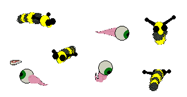

Catz 3, 4 and 5 Mouse "grubz" for you
~~~~~~~~~~~~~~~~~~~~~~~~~~~~~
NOTE: To use these, you will need to either download and install my mice etc Easy-edit packages, available from my Petz Easy-edit page, or you'll need to edit your game's Resource file in order to insert these grubz. I advise the first of those two options, as you can keep shuffling your mice and grubz around to your heart's content :-)
These "grubz" will overwrite your game's own mouse files. Please put your originals somewhere safe, and read the readme files included!

Yellow/black and, well, eurgh
grubz
.